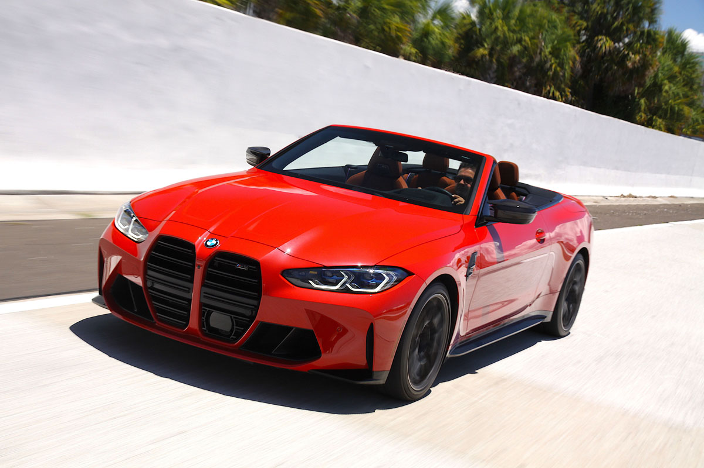

Это спортивное купе, оснащенное высокопроизводительным рядным 6-цилиндровым бензиновым двигателем BMW M TwinPower Turbo мощностью 510 л.с. и многочисленными Это спортивное купе, оснащенное высокопроизводительным рядным 6-цилиндровым бензиновым двигателем BMW M TwinPower Turbo мощностью 510 л.с. и многочисленными